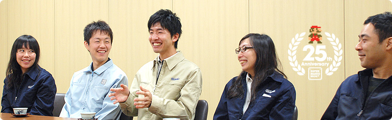

### 「スーパーマリオ２５周年」

<DIV ID="volbox-5"><P CLASS="volnum1"><A CLASS="btn-volnum1" TITLE="社長の代わりに糸井重里さんが訊く" HREF="../vol1/index.html">社長の代わりに糸井重里さんが訊く
<P CLASS="volnum2"><A CLASS="btn-volnum2" TITLE="ファミコンとマリオ 篇" HREF="../vol2/index.html">ファミコンとマリオ 篇
<P CLASS="volnum3"><A CLASS="btn-volnum3" TITLE="『スーパーマリオ』シリーズ開発経験者 篇 その１" HREF="../vol3/index.html">『スーパーマリオ』シリーズ開発経験者 篇 その１
<P CLASS="volnum4"><A CLASS="btn-volnum4s" TITLE="『スーパーマリオ』シリーズ開発経験者 篇 その２">『スーパーマリオ』シリーズ開発経験者 篇 その２
<P CLASS="volnum5"><A CLASS="btn-volnum5" TITLE="『スーパーマリオ』生みの親たち 篇" HREF="../vol5/index.html">『スーパーマリオ』生みの親たち 篇

<DIV ID="main-visual">
<H2>
<DIV ID="pagebox-wrap">
<DIV CLASS="pagebox">
<P CLASS="pagenum"><A HREF="index.html">1. １９８０年代生まれ、それぞれの『マリオ』体験
<P CLASS="pagenum"><A HREF="index2.html">2. 「近所のお兄ちゃん」に教えられて
<P CLASS="pagenums"><A>3. 遊び手からつくり手に変わって
<P CLASS="pagenum"><A HREF="index4.html">4. 「任天堂に入りたい」
<P CLASS="pagenum"><A HREF="index5.html">5. ２５年経っても変わらないこと
<P CLASS="pagenum"><A HREF="index6.html">6. 『マリオ』の遊び方とつくり方

<DIV>

<DIV ID="int-box-wrap">
<H3>
<DIV CLASS="int-box"><DIV CLASS="int-name"><P>岩田
<DIV CLASS="int-text"><P>さて、遊び手として『マリオ』とともに育ったみなさんが、<br>ゲームのつくり手に変わるキッカケがあったと思いますが、<br>それはどんなことでしたか？
<DIV CLASS="clear"><DIV CLASS="int-box"><DIV CLASS="int-name"><P>天野
<DIV CLASS="int-text"><P>僕は大学を卒業するときに<br>１社だけ受けようと思いまして、それが任天堂でした。
<DIV CLASS="clear"><DIV CLASS="int-box"><DIV CLASS="int-name"><P>岩田
<DIV CLASS="int-text"><P>どうして任天堂を受けようと思ったのですか？
<DIV CLASS="clear"><DIV CLASS="int-box"><DIV CLASS="int-name"><P>天野
<DIV CLASS="int-text"><P>大学生のときに、映画を撮っていたんですけど、<br>撮影前の待ち時間のときに、役者さんとかといっしょに<br>N64の対戦ゲームで遊んでいたんです。<br>それがとにかく楽しくて・・・。<br>もともとスーパーファミコン世代なので<br>ゲームはずっと遊んでいたんですけど、<br>やっぱりN64のゲームは触って楽しいものばかりでしたし、<br>できれば、そういった楽しい商品を<br>開発している任天堂に入りたいと思ったんです。
<DIV CLASS="clear"><DIV CLASS="int-box"><DIV CLASS="int-name"><P>岩田
<DIV CLASS="int-text"><P>任天堂に入ってからはどうでしたか？
<DIV CLASS="clear"><DIV CLASS="int-box"><DIV CLASS="int-name"><P>天野
<DIV CLASS="int-text"><P>僕はもともとデザイナー志望でした。<br>当時のゲームはちょうど３Ｄが流行っていて、<br>僕は映画を撮るのと並行して３Ｄの勉強もしていたんです。<br>なので、任天堂に入ったら３Ｄデザイナーになるつもりだったんですけど、<br>入った瞬間に、手塚（卓志）<sup>（※9）</sup>さんから<br>「プランナーをやってほしい」と言われて。
<DIV CLASS="clear"><DIV CLASS="int-box"><DIV CLASS="int-name"><P>岩田
<DIV CLASS="int-text"><P>入った瞬間にですか？
<DIV CLASS="clear"><DIV CLASS="int-box"><DIV CLASS="int-name"><P>天野
<DIV CLASS="int-text"><P>たぶん僕の絵がヘタだったということなんでしょうけど（笑）。<br>で、最初にゲームボーイアドバンスの<br>『マリオアドバンス４』<sup>（※10）</sup>を担当したんです。
<DIV CLASS="clear"><DIV CLASS="img-photo">
<DIV CLASS="int-box"><DIV CLASS="int-name"><P>岩田
<DIV CLASS="int-text"><P>入っていきなり『マリオ』にかかわったんですね。
<DIV CLASS="clear"><DIV CLASS="int-box"><DIV CLASS="int-name"><P>天野
<DIV CLASS="int-text"><P>はい。ただ、僕が入ったときはほとんど完成していて、<br>あとはデバッグの作業と、<SCRIPT LANGUAGE="JavaScript" TYPE="text/javascript">
<!--
	document.write('<A HREF="player.html?width=400&amp;height=320&amp;id=001" CLASS="thickbox 001" TITLE="カードｅリーダー＋"><SPAN>カードｅリーダー＋<'+'/SPAN><'+'/A>');
//-->
</SCRIPT><NOSCRIPT><A HREF="img/slide001.jpg"><SPAN>カードｅリーダー＋</SPAN></NOSCRIPT>で<br>新しい遊びを考えようという状況でした。
<DIV CLASS="clear"><DIV CLASS="int-box"><DIV CLASS="int-name"><P>岩田
<DIV CLASS="int-text"><P>カードｅリーダー<sup>（※11）</sup>というのは、<br>カードに印刷した二次元バーコードを読み取るための<br>ゲームボーイアドバンスの周辺機器で、<br>カードｅリーダー＋は、その上位機種として<br>ゲームキューブや別のゲームボーイアドバンスとの<br>通信機能などが追加されたものでしたね。
<DIV CLASS="clear"><DIV CLASS="int-box"><DIV CLASS="int-name"><P>天野
<DIV CLASS="int-text"><P>はい。そこで、新たにコースを追加できたり、<br>スーパープレイが見られるようにしたいと考えました。<br>で、いったん『マリオアドバンス４』ができあがった後に、<br>僕が何をしていたかというと、マリオクラブ<sup>（※12）</sup>で、<br><SCRIPT LANGUAGE="JavaScript" TYPE="text/javascript">
<!--
	document.write('<A HREF="player.html?mv=movie006&amp;width=320&amp;height=280&amp;id=movie006" CLASS="thickbox movie006" TITLE="『マリオアドバンス４』のスーパープレイ"><SPAN>『マリオアドバンス４』のスーパープレイ<'+'/SPAN><'+'/A>');
//-->
</SCRIPT><NOSCRIPT><A HREF="movie/movie006.jpg"><SPAN>『マリオアドバンス４』のスーパープレイ</SPAN></NOSCRIPT>を<br>ひたすら録っていたんです。
<DIV CLASS="clear"><DIV CLASS="int-box"><DIV CLASS="int-name"><P>岩田
<DIV CLASS="int-text"><P>天野さんが自分で、ですか？
<DIV CLASS="clear"><DIV CLASS="int-box"><DIV CLASS="int-name"><P>天野
<DIV CLASS="int-text"><P>はい。僕はそんなにゲームがうまいわけでもなかったんですけど、<br>のちに<A HREF="../../../../wii/interview/smnj/vol3/index.html"><SPAN>『NewスーパーマリオWii』でディレクターを担当することになる<br>足助（重之）<sup>（※13）</sup>さん</SPAN>が、僕の面倒を見てくれたんです。<br>ところが、足助さんのスーパープレイの質に対する要求が<br>ものすごく厳しかったんです。<br>「土管には必ず真ん中から入るように！」とか<br>「ここで無意味なジャンプをしてはダメ！」とか・・・。<br>さらに、自分ではすごくうまく録れたと思ったのに、<br>「人がプレイしたような動きに見えない」とボツにされたこともありました。
<DIV CLASS="clear"><DIV CLASS="int-box"><DIV CLASS="int-name"><P>岩田
<DIV CLASS="int-text"><P>スーパープレイの完成度があまりにも高すぎて、<br>天野さんが実際にプレイしたようには見えなかったんですね（笑）。<br>スーパープレイのクオリティに対する足助さんの要求が<br>それくらい厳しいので、スタッフが泣いた、<br>という話はわたしも聞きました。
<DIV CLASS="clear"><DIV CLASS="int-box"><DIV CLASS="int-name"><P>天野
<DIV CLASS="int-text"><P>その泣いたスタッフというのは僕です（キッパリ）。
<DIV CLASS="clear"><DIV CLASS="int-box"><DIV CLASS="int-name"><P>一同
<DIV CLASS="int-text"><P>（笑）
<DIV CLASS="notes-box"><DIV CLASS="notes-num"><P>※9
<DIV CLASS="notes-text"><P>手塚（卓志）＝任天堂情報開発本部 制作部部長。『スーパーマリオブラザーズ』制作者のひとり。
<DIV CLASS="clear">
<DIV CLASS="clear">
<DIV CLASS="notes-box"><DIV CLASS="notes-num"><P>※10
<DIV CLASS="notes-text"><P>『マリオアドバンス４』＝『スーパーマリオアドバンス４』。２００３年７月に発売されたアクションゲーム。ファミコンの『スーパーマリオ３』をゲームボーイアドバンス用ソフトにリメイクしたもの。
<DIV CLASS="clear">
<DIV CLASS="clear">
<DIV CLASS="notes-box"><DIV CLASS="notes-num"><P>※11
<DIV CLASS="notes-text"><P>カードｅリーダー＝２００１年１２月に発売されたゲームボーイアドバンスの周辺機器。カードｅに印刷された二次元バーコードを読みこむことによって、ミニゲームが楽しめたり、新しいデータを追加したりすることができた。２００３年６月には、ゲームキューブや別のゲームボーイアドバンスとの通信機能が追加された「カードｅリーダー＋」が発売された。
<DIV CLASS="clear">
<DIV CLASS="clear">
<DIV CLASS="notes-box"><DIV CLASS="notes-num"><P>※12
<DIV CLASS="notes-text"><P>マリオクラブ＝マリオクラブ株式会社。任天堂の開発中ソフトのデバッグやテストプレイを行う。
<DIV CLASS="clear">
<DIV CLASS="clear">
<DIV CLASS="notes-box"><DIV CLASS="notes-num"><P>※13
<DIV CLASS="notes-text"><P>足助重之（あすけしげゆき）＝任天堂情報開発本部 制作部所属。
<DIV CLASS="clear">
<DIV CLASS="clear">

<DIV CLASS="clear">
<DIV CLASS="clear"><DIV CLASS="int-box"><DIV CLASS="int-name"><P>天野
<DIV CLASS="int-text"><P>『NewスーパーマリオWii』の「おたからムービー」は、<br>たくさんの人たちから話題にしていただくことができましたけど、<br>実はスケジュール的に厳しいこともあって、<br>「今回は入れないほうがいいんじゃないか」という声もあったんです。<br>でも、７年前の自分自身の経験から、<br>「これはとても良い機能だ！」と感じていましたので、<br>つくるのが大変だとしても、僕は入れるべきだと思っていました。
<DIV CLASS="clear"><DIV CLASS="int-box"><DIV CLASS="int-name"><P>岩田
<DIV CLASS="int-text"><P>７年前に泣きながら、足助さんといっしょに苦労したことが、<br>『NewスーパーマリオWii』の「おたからムービー」につながっている、<br>というわけなんですね。
<DIV CLASS="clear"><DIV CLASS="img-photo">
<DIV CLASS="int-box"><DIV CLASS="int-name"><P>天野
<DIV CLASS="int-text"><P>はい。
<DIV CLASS="clear"><DIV CLASS="int-box"><DIV CLASS="int-name"><P>岩田
<DIV CLASS="int-text"><P>「それをみなさん忘れないでください！」と、<br>天野さんは言いたいんですね。
<DIV CLASS="clear"><DIV CLASS="int-box"><DIV CLASS="int-name"><P>天野
<DIV CLASS="int-text"><P>はい。この場を借りて、<br>しっかりお伝えしたいと思います（笑）。
<DIV CLASS="clear"><DIV CLASS="int-box"><DIV CLASS="int-name"><P>岩田
<DIV CLASS="int-text"><P>わかりました（笑）。<br>さて、西村さんがつくり手になることになったのは、<br>どんなことがキッカケだったのですか？
<DIV CLASS="clear"><DIV CLASS="int-box"><DIV CLASS="int-name"><P>西村
<DIV CLASS="int-text"><P>わたしは歴代の『マリオ』を遊んできましたが、<br>とくに『マリオ３』のときに「なんてかわいい絵なんだろう」<br>と思いながら触っていたんです。
<DIV CLASS="clear"><DIV CLASS="int-box"><DIV CLASS="int-name"><P>岩田
<DIV CLASS="int-text"><P>やっぱり、もともとデザインを志向していたので、<br>絵のほうに目が行くんですね。
<DIV CLASS="clear"><DIV CLASS="int-box"><DIV CLASS="int-name"><P>西村
<DIV CLASS="int-text"><P>はい。いろんなものに変身するマリオを見ているだけで<br>キュンとしてしまったんです（笑）。<br>しかも、そのかわいさと、変身した後の性能が、<br>ひと目でわかるようになっていることにとても感心して。
<DIV CLASS="clear"><DIV CLASS="int-box"><DIV CLASS="int-name"><P>岩田
<DIV CLASS="int-text"><P>絵を見て性能がすぐにわかるということは、<br>けっこう早くから意識されていましたか？
<DIV CLASS="clear"><DIV CLASS="int-box"><DIV CLASS="int-name"><P>西村
<DIV CLASS="int-text"><P>いえ、もちろん子どもの頃は、そういうことには気づかずに<br>夢中になって遊んでいるだけだったんですけど、<br>大きくなるにつれて「『マリオ３』の何が面白かったんだろう」<br>と考えるようになりました。
<DIV CLASS="clear"><DIV CLASS="int-box"><DIV CLASS="int-name"><P>岩田
<DIV CLASS="int-text"><P>ゲームの仕事に興味をもつようになったのはいつ頃からですか？
<DIV CLASS="clear"><DIV CLASS="int-box"><DIV CLASS="int-name"><P>西村
<DIV CLASS="int-text"><P>大学生になってからです。<br>友だちとゲームを遊んでいるとき、みんなの表情がキラキラしていて、<br>あのような笑顔はなかなか見られるものではありませんし、<br>しかも、遊んでいる人だけでなく、家族みんなが楽しめるわけですよね。<br>ですから、そんな笑顔をつくりだせる仕事に就きたいと思ったんです。<br>もともとわたしは、それほどゲームが得意ではないのですが、<br>弟がとてもうまくて、その姿を見ながら育ちましたので、<br>「これほど人を夢中にさせるゲームって何だろう」ということにも<br>ずっと興味がありました。
<DIV CLASS="clear"><DIV CLASS="int-box"><DIV CLASS="int-name"><P>岩田
<DIV CLASS="int-text"><P>西村さんは<A HREF="../../../../etc/seminar/index.html"><SPAN>任天堂ゲームセミナー</SPAN><sup>（※14）</sup>の出身なんですよね。
<DIV CLASS="clear"><DIV CLASS="int-box"><DIV CLASS="int-name"><P>西村
<DIV CLASS="int-text"><P>はい、そうです。<br>やっぱり『マリオ』シリーズが大好きだったということもありますし、<br>まずゲームセミナーを受けて、「ゲームとは何か」<br>「自分はゲームのことを本当に好きなのか」ということを、<br>ゲームづくりの体験を通じて理解したいと思ったんです。
<DIV CLASS="notes-box"><DIV CLASS="notes-num"><P>※14
<DIV CLASS="notes-text"><P>任天堂ゲームセミナー＝学生を対象に、ゲーム制作が体験できる任天堂主催の実践的セミナー。
<DIV CLASS="clear">
<DIV CLASS="clear">

<DIV CLASS="clear">
<DIV CLASS="clear"><DIV CLASS="int-box"><DIV CLASS="int-name"><P>岩田
<DIV CLASS="int-text"><P>実際にゲームをつくってみて、どうでしたか？<br>「遊んで面白いな」とか、<br>「人を笑顔にする仕事っていいな」と思ったのと、<br>また違う印象があったんじゃないでしょうか。
<DIV CLASS="clear"><DIV CLASS="int-box"><DIV CLASS="int-name"><P>西村
<DIV CLASS="int-text"><P>そうなんです。<br>本当に、本当に、こんなに大変なことなんだと（笑）。<br>ゲームセミナーではパズルゲームの企画を考えたのですが、<br>みんなで四苦八苦しまして・・・。
<DIV CLASS="clear"><DIV CLASS="img-photo">
<DIV CLASS="int-box"><DIV CLASS="int-name"><P>岩田
<DIV CLASS="int-text"><P>遊び手の人たちにとっては、当たり前のことでも、<br>つくり手にまわると、いろんな人がそれぞれに汗をかいて、<br>ヒーヒー言わないとゲームはできませんからね。
<DIV CLASS="clear"><DIV CLASS="int-box"><DIV CLASS="int-name"><P>西村
<DIV CLASS="int-text"><P>はい、こんなに大変な仕事なんだということが<br>イヤというほど身にしみてわかりました。
<DIV CLASS="clear"><DIV CLASS="int-box"><DIV CLASS="int-name"><P>岩田
<DIV CLASS="int-text"><P>任天堂に入社してからはどうですか？
<DIV CLASS="clear"><DIV CLASS="int-box"><DIV CLASS="int-name"><P>西村
<DIV CLASS="int-text"><P>わたしはいま、デザインのなかでもちょっと特殊な、<br>エフェクトデザインという視覚効果を担当しているんですが・・・。
<DIV CLASS="clear"><DIV CLASS="int-box"><DIV CLASS="int-name"><P>岩田
<DIV CLASS="int-text"><P>エフェクトデザインとはどういうことをするのか、<br>ちょっと説明してもらえますか？
<DIV CLASS="clear"><DIV CLASS="int-box"><DIV CLASS="int-name"><P>西村
<DIV CLASS="int-text"><P>一般的によく言われるのが、<br>ゲーム中で何かにぶつかったときの光ですとか、<br>雨を降らせるような環境をつくったりですとか、<br>ゲームのなかでどんなことが起こっているのかを<br>プレイヤーにすぐにわかっていただくようにする、<br>目に見えないものを視覚化する仕事です。
<DIV CLASS="clear"><DIV CLASS="int-box"><DIV CLASS="int-name"><P>岩田
<DIV CLASS="int-text"><P>マンガでいうと、効果線みたいなもので、<br>現実の世界では見えないものであっても、<br>それを表現することで、起こったことをよりわかりやすくするための<br>効果を視覚的に追求する仕事ですよね。
<DIV CLASS="clear"><DIV CLASS="int-box"><DIV CLASS="int-name"><P>西村
<DIV CLASS="int-text"><P>はい。そのとおりです。<br>そこで、これまで『マリオ』シリーズを触ってきて、<br>とてもシンプルな表現でありながらも<br>パッと見て、直感的に伝わってくる部分があって、<br>それはどうしてなんだろうと、ずっと気になっていたんです。<br>なので、いまこのような仕事に就けているというのが、<br>すごく運命のようなものを感じている部分もあって・・・。
<DIV CLASS="clear"><DIV CLASS="int-box"><DIV CLASS="int-name"><P>岩田
<DIV CLASS="int-text"><P>遊んで手ごたえを感じていた人が、<br>いまは手ごたえをつくる側に回っているわけですね。
<DIV CLASS="clear"><DIV CLASS="int-box"><DIV CLASS="int-name"><P>西村
<DIV CLASS="int-text"><P>はい。かつては遊び手として<br>『マリオ３』や『マリオＵＳＡ』などをプレイして、<br>そのときに感じた手触り感や機能を伝えることを、<br>いまはつくり手の側にまわって、提案しなきゃいけないということで、<br>やりがいをすごく感じています。
<DIV CLASS="clear"><DIV ID="asks-pagination">
<DIV ID="page-prev"><A HREF="index2.html">2. 「近所のお兄ちゃん」に教えられて
<DIV ID="page-next"><A HREF="index4.html">4. 「任天堂に入りたい」
<DIV CLASS="clear">
<DIV CLASS="clear">
<DIV ID="ftr">
<P CLASS="home"><A HREF="../../../../index.html">任天堂ホームページ
<P CLASS="pagetop"><A HREF="#pagetop">ページの一番上へ
<DIV CLASS="clear">

<DIV CLASS="clear">
</BODY>
</HTML>
